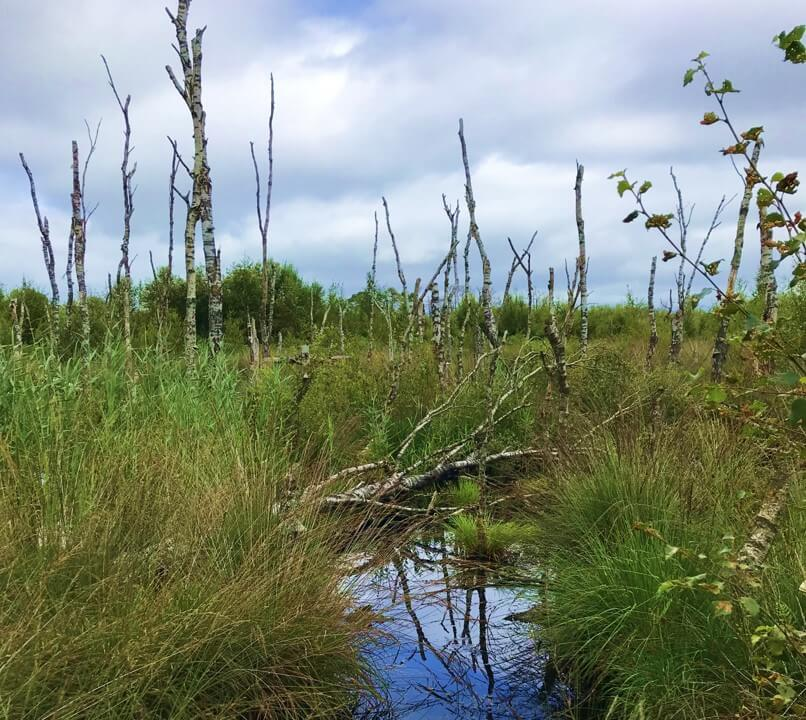
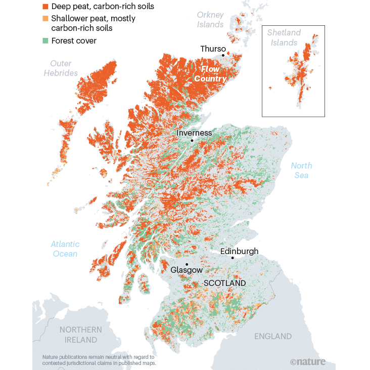
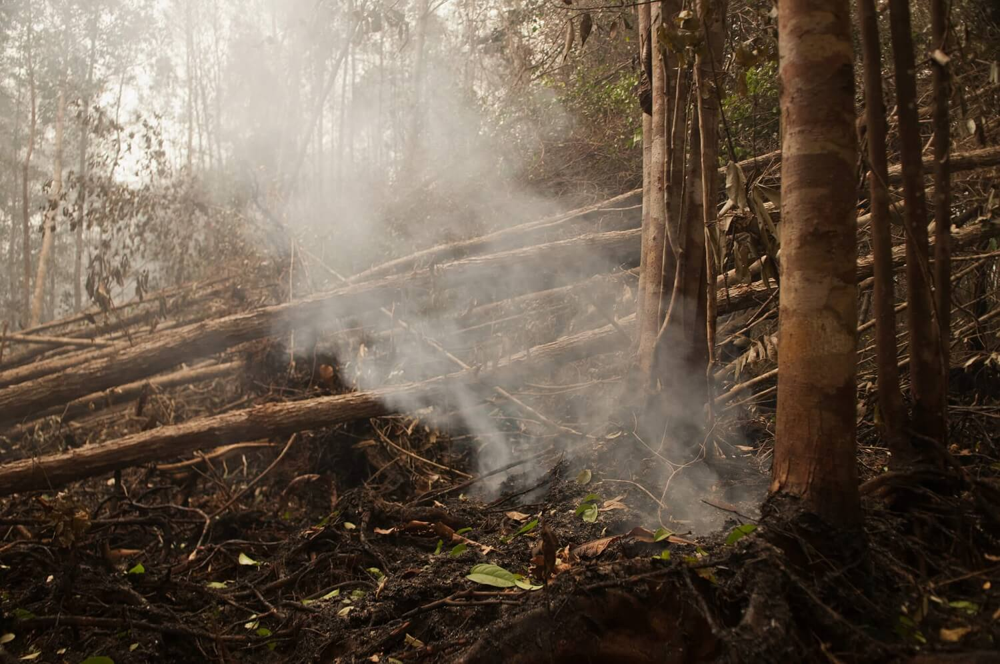
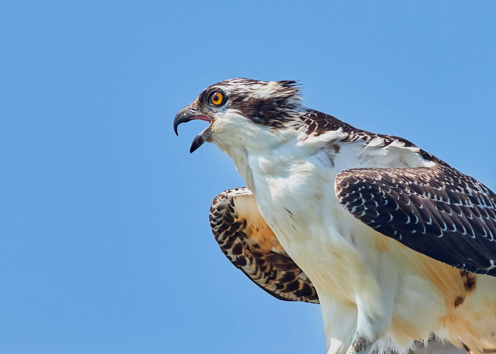
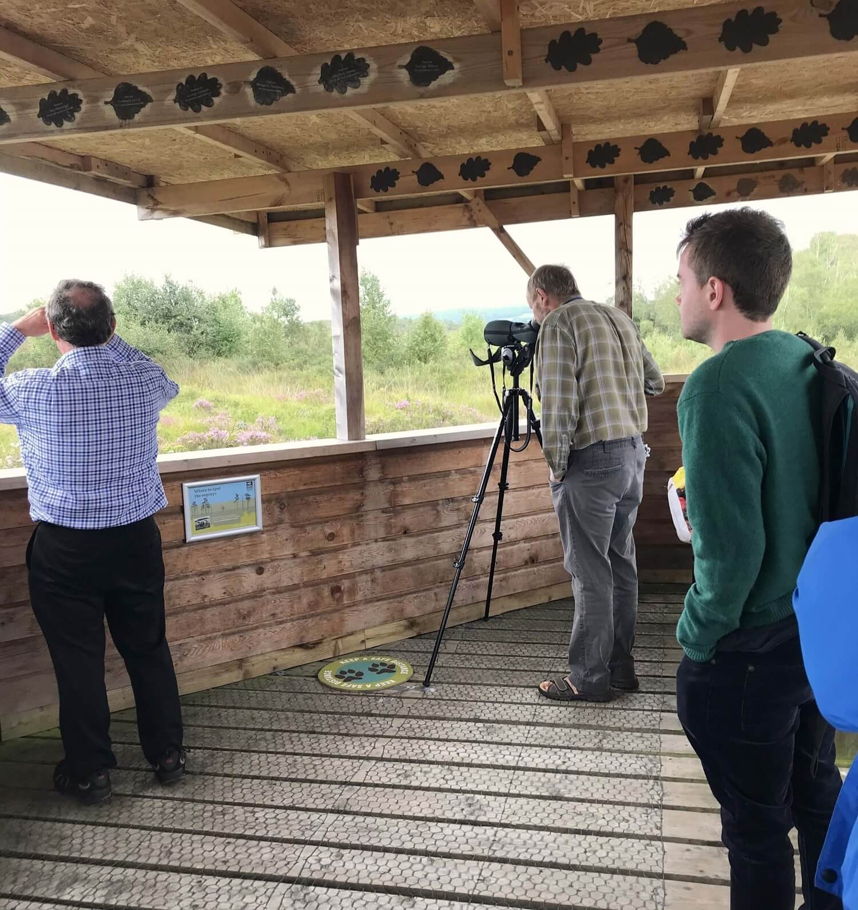

Restoring peatlands is vital in the fight against climate change. The Foulshaw Moss Nature Reserve in Cumbria was once a threatened habitat due to heavy grazing and years of conifer tree planting, which severely dried up the landscape.
However, the reserve is now leading in peatland restoration, helping to prevent the release of carbon dioxide into the atmosphere. Additionally, the reserve has become a successful nesting site for one of the UK’s most treasured birds of
prey: the osprey.
Ospreys are thriving in the Cumbria region, currently homing 10 breeding pairs. They have been observed in the Foulshaw Moss Nature Reserve, where conservationists have been helping restore the peatland bogs, which were previously drained
for conifer tree planting. Peat is formed from partially decayed plants and trees which lock carbon in the soil, preventing decomposition and creating a layer of peat - it takes approximately 1,000 years to develop 1m of peat.

The Foulshaw Moss Nature Reserve in Cumbria is an important site for peat bog restoration. Additionally, it has become a successful nesting site for ospreys migrating from West Africa | Isabel Rowbotham / The Kingfisher.
These historic peatland bogs were drained and damaged for cattle grazing, and their forests were burned for clearing and the planting of conifer trees, all of which led to unstable and reduced water levels across the bogs. In addition to
these
practices, the lack of crop rotations eventually led to the land becoming anoxic, meaning they contained no oxygen. This contributed to root and plant death, and damaged the bogs and its ecosystems. The Foulshaw Moss Nature Reserve is a
great example of how conservationists are restoring the land to its original wetland state, importantly bringing back a well-balanced ecosystem.
The importance of restoring the peatlands in the Lake District
Peatlands are important due to their carbon storage abilities. They allow plant materials to lock carbon within the peat, making these habitats the UK’s largest carbon sinks.
‘A 5% loss of UK peat soils would be equal to the entire annual man-made carbon emissions.’
The preservation of peatlands in the Lake district area, as well as in Scotland and Wales, is recognised to be a powerful weapon in the fight against climate change, since peat naturally locks carbon in its soils. These restoration projects
must be carried out carefully and diligently; in some cases, a lack of care has led to bogs leaking carbon due to the disruption of peatland formation. This is why the disruption of peatlands caused by the afforestation of conifer trees,
such as pine, was so detrimental for the climate, as it released the peatland’s stored carbon into the atmosphere, contributing to the acceleration of global warming.

The diagram above shows the distribution of peatlands in the UK. Historical peatlands were drained over the years for the purpose of conifer tree planting. These caused peatlands to degenerate and become a source of carbon into the
atmosphere | Z. Yu et al. (2010) / Scottish Natural Heritage / Nature.
Peatland habitat disruption marks a clear example of how logging and deforestation harms the environment and exacerbates climate change. Land disruption through peat fires can cause carbon leaks of 2 billion tonnes of carbon dioxide
annually, attributing to approximately 5% of human-caused greenhouse-gas (GHGs) emissions.
Preservation of these bogs have many other benefits for the environment. Peatlands may help soak up excess rainfall and prevent disastrous flooding in the following days. Additionally, their moss is an excellent and natural filter of
rainwater, providing high quality water to the surrounding region. The Cumbria Wildlife Trust is committed to restoring the landscape and preserving peatland formation, and if you are interested in
supporting this project you can visit their website to make a donation.
‘So you can see just how important it is to keep our peat bogs healthy – not just for biodiversity, but to protect our homes and our planet too.’
Peatlands all over the world are under threat
Plantations on peatlands are increasingly common in South Asia. Research on Malaysian and Indonesian palm oil farming has shown that the practice of clearing peat swamps and destroying their forests for plantations is contributing to global
GHG emissions. Around 3 million hectares of tropical peatland forests have been cleared for palm oil agriculture, contributing between 16.6% and 27.9% of total greenhouse gas (GHG) emissions, which may be between 0.44% and 0.74% of annual
global emissions.

Tropical peatland burning is a common practice in the clearing of forests for palm oil farming | Aulia Erlangga / Flickr.
Perhaps the world’s largest tropical peatland source is Brazil. The Amazon Basin is a vast and rich wetland, and was identified as a significant emitter of carbon dioxide and methane, as a result of the burning and drainage of tropical
wetland forests. As scientists continue to further understand the value of peat deposits, policy makers should pay particular attention to peatland restoration efforts, such as those carried out by the Wildlife Trust in the UK, in order to
mitigate the effects of climate change.
Ospreys at the Foulshaw Moss Nature Reserve
The Foulshaw Moss peatland restoration project is bringing back balance to the local ecosystem, which has even led to the return of ospreys to the region. Ospreys are fish-hunting birds and so prefer to live near bodies of water, such as
wetlands, making the nature reserve an ideal habitat for them. These impressive birds of prey are known for diving into the water and catching fish using their sharp talons, and have since become a popular tourist attraction for the local
area.
The wetland habitat is now home to a growing number of ospreys; in May 2021, news came of three newborn chicks hatching within the reserve, which comes after the return of a breeding pair to the area in March.
‘Last summer, two osprey chicks fledged, bringing the breeding pair’s total to an amazing 18 chicks so far since 2014!’
The conservation of ospreys in the UK and Scotland has been largely successful. In 1996, the Leicestershire & Rutland Wildlife Trust introduced a project to re-introduce ospreys to England, after more than a century and a half of ospreys
being considered extinct in England. Ospreys, along with many other native birds, were driven into extinction in England around the 1840’s, most likely due to egg collecting and the loss of their habitat. Ospreys did migrate to Scandinavia,
and eventually returned to the UK in 1954 to nest in Scotland. The low survival rate of chicks who are able to complete the migratory route, combined with the three- to five-year wait for ospreys to start breeding, has contributed to the
slow re-establishment of ospreys in the UK.

Ospreys are a protected bird species in the UK under the Wildlife and Countryside Act, 1981. Ospreys are characterically brown and white birds of prey that live near wetlands and large bodies of water. These migratory birds fish in these
areas using their sharp talons | Karo Kujanpaa / Unsplash.
Ospreys born during the summer are expected to migrate around early September and embark on a migratory route that ends on the west coast of Africa. Those nesting in the Cumbia and North East region of England, migrate south and cross the
English Channel. Satellite tracking has shown ospreys reaching North Africa, and eventually continuing on to Bioko, an island off the west coast of Africa.

Visitors to the Foulshaw Moss Nature Reserve, such as myself, can observe ospreys nesting at the edge of the peatland swamp. Ospreys arrive in the UK around March to breed and nest near slow moving waters | Isabel Rowbotham / The
Kingfisher.
There is a strong case to be made for the restoration of the wetlands in the Cumbria region and the return of ospreys. One of the reasons this animal stopped migrating to the UK was the loss of their habitat. But now, thanks to efforts by
the Cumbria Wildlife Trust, the local peatlands are being restored and earlier in July 2021, the project reported its 200th osprey chick born in England.
Special thanks to the Foulshaw Moss Nature Reserve volunteer Matthew.
Page, S. E., Morrison, R., Malins, C., Hooijer, A., Rieley, J. O. & Jauhiainen, J. (2011) Review of peat surface greenhouse gas emissions from oil palm plantations in Southeast Asia. Indirect Effects of Biofuel Production Series, White
Paper Number 15, The International Council on Clean Transportation (ICCT).